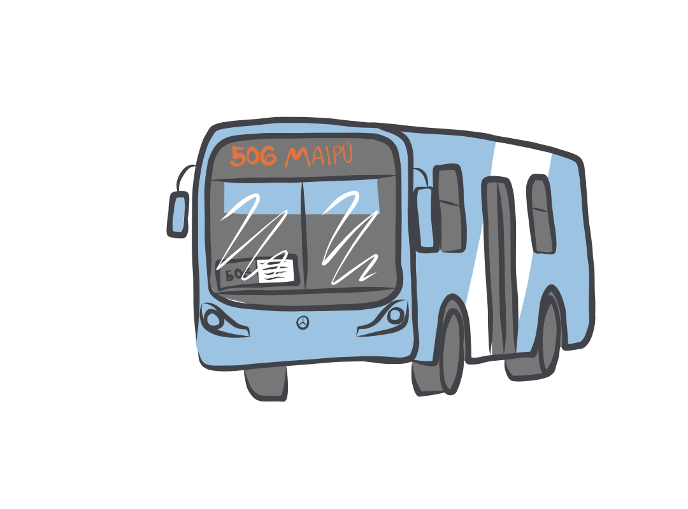
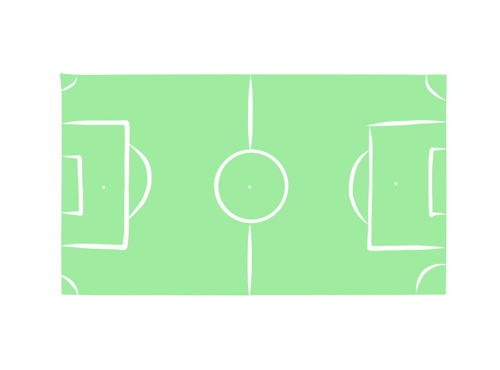

¿Quieres saber a qué equivale la cantidad de gente que podrías encontrar en?....
¡Clickea cada uno!
480 MICROS
 En estas micros cabrían 23.000 niños.
Esta es la cantidad de niños entre 0 y 14 años de otros países que
no pueden ir al colegio o al jardín infantil
en Chile.
UNA CANCHA DE FUTBOL REPLETA

Si en una cancha de fútbol todos se pusieran uno junto al otro, cabrían
10.663 niños.
Esta es la cantidad de niños inmigrantes que
viven en situación de pobreza en Chile